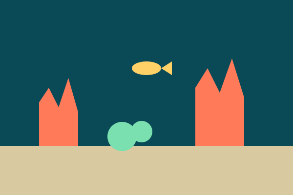
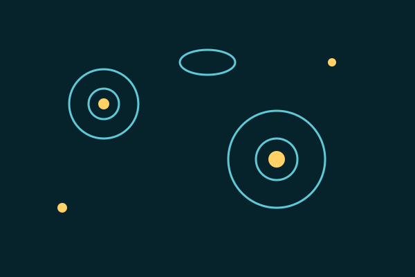

Salud del arrecife
Censos trimestrales de cobertura coralina y blanqueamiento.

Censos trimestrales de cobertura coralina y blanqueamiento.

Muestreo de fitoplancton y zooplancton para medir la base de la red alimentaria.
Registro continuo en 12 puntos de la costa, con datos descargables.
| Programa | Frecuencia | Puntos |
|---|---|---|
| Salud del arrecife | Trimestral | 8 |
| Plancton | Mensual | 5 |
| Sensores | Continua | 12 |